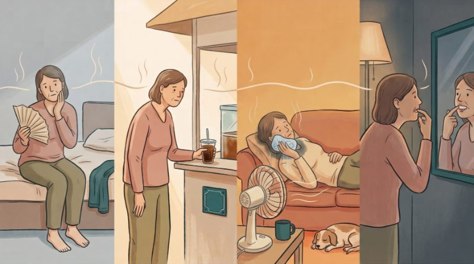
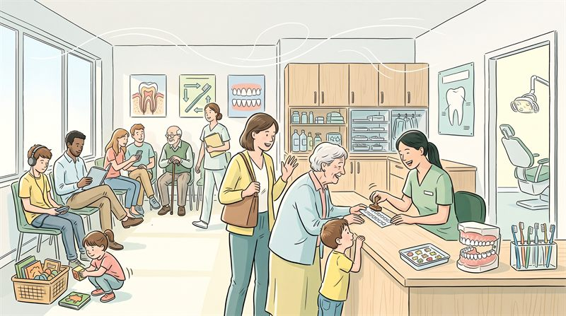
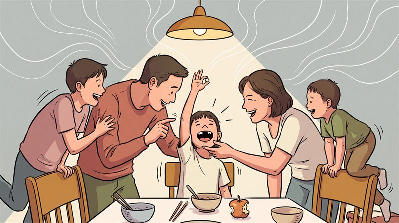

文章已經定稿，這一頁只決定圖要畫什麼。都還沒畫，先挑梗。
⚠⚠⚠ Ⓕ 出圖之前，先把這三張存下來一起餵進去
你說「人物風格跟網站現有的不太一樣」—— 成因不是提示詞寫得不夠細，是風格用文字描述一定會漂 （〈生物陶瓷〉那一輪：形狀用文字講失敗三四輪，改成給圖之後一次就中）。 下面三張是站上自己的 HERO，長按存下來，出圖時一起附上。提示詞第一段已經寫著 「文字和參考圖衝突時，以參考圖為準」。



2026-09-05：Ⓕ 是照你的方向新加的，建議走它。
你選了 Ⓐ 但指出它單調 —— 成因是四格共用同一個診間、同一片背景，變的只有坐上去的人。 Ⓕ 把它換成七格拼起來的鑲嵌：六個人各自在自己的生活裡、各自一個底色，中間一格是醫師。
2026-09-05 晚間：Ⓕ 照你那五件改成第二版了 —— 換成餵站上自己的三張圖來定風格、 六個家從一句話變成一張道具清單、多寫一段「人用實線、環境用淡線」的兩層畫法、 中間變成兩個人（一個白袍、一個只有刷手服，兩件刷手服不同色）。
2026-09-05 更晚：Ⓕ 第三版 —— 治「還是比站上寫實了一點」。 先量過再改，量出來把方向修掉了：站上十一張自己就分兩群， 〈定期檢查〉48%、〈貝氏刷牙法〉50% 的面積是近白的，比你看到那張還淡， 所以問題不在顏色。是兩件「畫得太準」——
| 近白 | 墨 | 彩度中位 | |
|---|---|---|---|
| 〈牙齦流血〉 | 6.3% | 19.2% | 19.3 |
| 〈換牙〉 | 18.0% | 13.3% | 9.9 |
| 〈缺牙之後〉 | 17.1% | 12.9% | 13.5 |
| 〈定期檢查〉 | 48.0% | 8.0% | 6.6 |
| 〈貝氏刷牙法〉 | 50.1% | 6.1% | 4.8 |
① 臉有立體感 —— 眼皮、眼白、反光點、顴骨、一根一根的頭髮。站上的臉是
「一個小弧形當眼睛、一筆鼻子、一筆嘴，臉上完全沒有陰影」。
② 每一樣東西用的筆畫太多 —— 電風扇畫出整圈護網、磁磚畫出完整格線、鐵窗每一根都畫、
透視是準的。〈定期檢查〉那張東西一樣多，但每一樣只用三到八筆。
⚠ 而這兩件是我第二版的提示詞自己寫出來的：那一段我寫了 「環境要細到你叫得出這是什麼房間」——那等於在叫它畫準，而畫得準正是寫實的定義。 第三版把「臉與手」和「用最少的筆畫」兩段放到最前面，「兩層畫法」砍掉一半並反過來寫。
2026-09-05 更晚：Ⓕ 第四版 —— 治「人的臉變得有點呆板」。 成因是我第三版的提示詞自己寫的：治「太寫實」那一段七條全是禁令 （沒有睫毛／眼白／反光點／眼皮的褶／陰影／腮紅／一根根的頭髮）， 一條「要有什麼」都沒有 —— 寫實是拿掉了，表情的載體也一起被清空。 照你說的去對站上那三張，差的是這些：
| 站上 | 我第三版寫的 | |
|---|---|---|
| 眉毛 | 每張臉都有，一筆，角度就是情緒 | 一個字都沒提 |
| 嘴 | 開合幅度最大，笑起來是張開的形狀＋一塊牙 | 「嘴巴是一筆」 |
| 眼睛 | 開心時彎成月牙、想睡是一條縫 | 只說是一個小弧形 |
| 腮紅 | 有，一塊平塗的淡色 | 直接禁掉了 |
| 年紀的線 | 嘴邊一條笑紋、眼尾兩筆 | 被「不要輪廓」一起掃掉 |
第二個成因也是我寫的：「六個人都很平常、很自在」 —— 那句是為了擋病容， 可是它等於叫模型畫六張一模一樣的表情。現在改成逐格點名，中間兩位也各給一種。 判準多一條反方向的：七張臉如果互換位置沒有人看得出來，也是錯的。
Ⓐ~Ⓔ 留著沒有動，往下捲還在。
拉高之後會長多高（實測）
站上十一張 HERO 全部是 16:9。下面是圖高 px ／佔一屏的百分比：
| 比例 | 390 | 744 | 1440 |
|---|---|---|---|
| 16:9 現況 | 204／24% | 371／33% | 369／41% |
| 3:2 | 241／29% | 440／39% | 437／49% |
| 4:3 建議 | 272／32% | 495／44% | 492／55% |
| 5:4 | 290／34% | 528／47% | 525／58% |
| 1:1 | 362／43% | 659／58% | 656／73% |
| 4:5 | 453／54% | 824／73% | 820／91% |
⚠⚠ 卡住的是電腦版不是手機：1440 上內文欄 656px，1:1 就吃掉 73% 的螢幕、 4:5 是 91%（點進文章第一眼只有一張圖）。4:3 的 55% 還在可以接受的一側， 而且它正好落在你給的兩張圖中間（絨毛玩偶那張跨頁約 1.45、羽扇豆那張 1:1）。
⚠⚠ 首頁的文章卡不能跟著變 —— 縮圖固定 16:9，十一張並排，改一張就要重裁十張。 所以拉高的圖在卡片上只露出中間一條：4:3 露 75%、5:4 露 70%、1:1 只剩 56%。 Ⓕ 的提示詞已經把「上下各 12% 不可以放臉與關鍵物件」寫死。
⚠ 另外兩支工具要跟著改（等你挑定再動，各兩行）：縮圖那一支寫死了 16:9 會拒絕出圖、
產生首頁卡的那一支寫死了 width="2000" height="1116"。
整張圖是七格拼起來的：六個不同的人各自在自己家裡一格，中間一格是兩位醫事人員。
對到文章的 〈哪些人適用〉（Ⓐ 的改寫）
格子是不規則的多角形、大小不一，中間隔著手繪的細線 —— 不是整齊的四方格。每一格自己一個很淡的底色。
六格：孕婦／拿拐杖的阿嬤／桌上放著藥袋的中年男子／早餐桌上量血糖／半夜起來倒水喝／綁著頭巾、手邊保溫杯的中年女性。每個人都在自己家裡，不是在診間。
中間那一格最大：醫師（白袍配淺鼠尾草綠刷手服）站前半步，一手向外攤開介紹；護理師（只有刷手服、暗一階的青藍）站後半步，側頭對著其中一格點頭。兩個人都看著四周那幾格。
比例 4:3，比站上現在那十一張高（見最上面那一段）。
把 Ⓐ 的內容（誰要三個月一次）換一個排法：從「同一張椅子換人坐」變成「六個人各自在自己的生活裡，中間有人在看著他們」。單調的成因是背景一直沒變，不是人不夠多。
Editorial illustration, 4:3 landscape (slightly wider than tall, NOT a wide banner). REFERENCE IMAGES — THREE IMAGES ARE ATTACHED. They are existing illustrations from the same website and this new picture must look like it belongs beside them. Copy from them: the exact line quality, HOW FEW STROKES each object is drawn with, and above all HOW THE FACES ARE DRAWN — look at how much those faces are doing, how wide the mouths open, how the eyebrows tilt. Do NOT copy their layouts, their people or their scenes. Wherever the words below and the attached images disagree, THE ATTACHED IMAGES WIN. STYLE — THIS IS THE MOST IMPORTANT SECTION, READ IT FIRST. Warm hand-drawn editorial illustration, drawn quickly and confidently BY HAND. Every line is drawn in a warm dark brown, never pure black and never grey, with visible variation in width and dry broken ends — never an even mechanical vector line. Colour is laid down in FLAT areas, two or three steps of the same colour, with hard edges between the steps. EVERY surface carries a fine coloured-pencil grain. High key overall with plenty of pale paper showing through, BUT the picture must stay properly colourful — warm colours and cool colours both clearly present, and each person wears a different colour family from everyone else. People are simplified but their proportions are natural and their age is readable: Taiwanese / East Asian faces, normal head-to-body proportion. FACES — READ THIS TWICE. THESE FACES ARE SIMPLE, BUT THEY ARE NOT BLANK. Every face here is doing something, and every one of them is doing something DIFFERENT. WHAT A FACE HAS. Eyebrows: every face has two clearly drawn eyebrows, each one a single confident stroke, and THEIR ANGLE IS THE MAIN THING CARRYING THE MOOD — raised, level, one higher than the other, inner ends tipped up. Eyes: a solid dark shape with no outline; when someone is pleased the eye becomes an upward curve or a closed crescent, and when someone is sleepy it becomes a narrow slit. Mouths: THE MOUTH VARIES MORE THAN ANYTHING ELSE ON THE FACE. A laughing mouth is open wide — a shape, not a line, with a plain pale block of teeth inside. A thinking mouth is a wavy line pushed off to one side. A calm mouth is a small curve. NOT EVERY MOUTH IS THE SAME SMALL CLOSED ARC. A flat soft patch of blush on the cheek is welcome. On older faces, one or two deliberate drawn lines are welcome — a single smile line beside the mouth, two short strokes at the outer corner of an eye — DRAWN LINES, not shading. Heads tilt; shoulders lean. WHAT A FACE DOES NOT HAVE. No shading or modelling anywhere on the face — no cheekbones, no contouring, no shadow under the nose or chin. No eyelashes, no visible white of the eye, no catchlight, no eyelid crease. Hair is two or three large shaped masses of flat colour with at most a few interior strokes — never individual strands, never rendered curls, never highlights. Hands are simple: fingers are simple tapering shapes, no knuckle modelling, no fingernails. TWO TESTS. If a face looks like a portrait, it is wrong. And if the faces could be swapped between panels without anyone noticing, it is also wrong. ECONOMY OF LINE — Every object is drawn with THE SMALLEST NUMBER OF STROKES THAT STILL NAMES IT, and then stopped. An electric fan is a circle, four or five spokes and a stand — not an accurate wire guard. A tiled wall is a few lines suggesting tiles, not a complete grid. A window grille is a few bars, not every bar. A dish rack is three or four dishes, not a full rack. A rice cooker is a rounded box with a lid. Perspective is relaxed and judged by hand, never ruled, never architecturally correct. Nothing in this picture is drawn accurately; everything is drawn quickly and recognisably. THIS RULE IS ABOUT THINGS, NOT ABOUT FACES — the faces still get their eyebrows, their mouths and their expression. TWO LEVELS — the people are drawn with the darkest, thickest lines and wear the strongest colours in their panel; the rooms behind them use thinner, paler lines and quieter colour. That is the only difference between them. The rooms are NOT more detailed than the people — they are LESS detailed. Each room holds MANY ordinary objects, but every one of those objects is drawn with very few strokes. Many things, each one simple. The one exception is the small object each person is holding or touching: that is drawn at full strength, because it is part of what they are doing. STRUCTURE — The whole picture is ONE MOSAIC of seven panels, like a page of an illustrated poster. The panels are irregular polygons of different sizes, fitted together edge to edge and separated by THIN HAND-DRAWN GUTTER LINES that are slightly wobbly, never ruler-straight and never a regular grid of rectangles. The mosaic fills the whole frame. Each panel has its own pale background tint, and each panel is a DIFFERENT ROOM with DIFFERENT FURNITURE — the six homes must never look like the same house drawn six times. THE CENTRE PANEL is the largest: an irregular five-sided panel in the middle of the picture, holding TWO members of clinic staff standing side by side, seen from the waist up, both turned three-quarters, both looking OUT TOWARDS THE PANELS AROUND THEM. Neither of them looks at the viewer, and THEIR TWO FACES ARE DOING DIFFERENT THINGS. THE DENTIST, a woman in her thirties, wears an open WHITE COAT over a pale sage-green scrub top, hair in a low bun. She stands slightly forward of the other. One arm is open and extended outward in a calm, welcoming, presenting gesture — the gesture of someone introducing people she is glad to see, not the gesture of someone giving a warning. Her weight leans very slightly towards the panels. HER FACE: an open smile with the mouth clearly open, eyebrows relaxed and lifted, eyes bright and wide. THE NURSE, a woman in her forties, wears NO WHITE COAT — only a scrub top, and it is a DIFFERENT COLOUR from the dentist's: a muted dusty teal. Short hair tucked behind one ear. She stands half a step behind and to the other side, hands resting easily together in front of her, head TILTED, nodding slightly at one of the panels. HER FACE: eyes curved into happy closed crescents, mouth closed in a small warm smile — visibly quieter and gentler than the dentist's face, not the same expression repeated. THE SIX PANELS AROUND HER, each holding ONE ordinary person in their own home, doing an ordinary thing. EACH ONE HAS A DIFFERENT EXPRESSION, LISTED BELOW — do not give them all the same pleasant neutral face. All of the objects below must be there, and every one of them is drawn with very few strokes. UPPER LEFT — a woman in her early thirties, visibly but not dramatically pregnant, sitting back on a fabric sofa with one hand resting on her middle, the other holding a slim blank booklet she is reading. FACE: looking down at the booklet, eyes curved, one corner of the mouth lifted — quietly pleased. HER ROOM: cushions, a low wooden coffee table with a glass of water and a small stack of plain books, slippers on the floor, a leafy pot plant, a barred Taiwanese window with daylight coming through, a standing fan. UPPER RIGHT — a woman in her seventies with short grey permed hair, standing in her own kitchen, a wooden walking stick hooked over her forearm, reaching up into a cupboard for a cup. FACE: mouth slightly open with the effort, both eyebrows raised, eyes on the cup — busy and a little triumphant, two smile lines at the corner of the eye. HER ROOM: an old-fashioned counter, a tiled wall, a kettle on the gas ring, a ladle and a cloth on hooks, a few unlabelled jars on the windowsill, a bamboo basket of vegetables, a bunch of garlic hanging up, a wooden crockery cupboard. RIGHT — a man in his early fifties in an open-collared work shirt, sitting at his dining table with a soft brown paper pharmacy bag in front of him and two blister packs of tablets half slid out of it, one hand resting on the bag. FACE: one eyebrow higher than the other, mouth a wavy line pushed to one side, looking down at the tablets — thinking something over, not worried. HIS ROOM: a round table with a patterned plastic tablecloth, a glass of tea, wooden chairs, a standing fan, a towel over a chair back, a barred window, a remote control and reading glasses on the table. LOWER RIGHT — a man in his sixties at his breakfast table, holding a small handheld meter to his fingertip. FACE: completely matter-of-fact — level eyebrows, mouth a small straight line, eyes down on his own finger. He has done this a thousand times and it is not an event. HIS ROOM: a bowl of rice porridge, two small dishes of vegetables, a cup of soy milk, a steel vacuum flask; behind him a kitchen doorway, a rice cooker on a counter, a hanging cloth, and beyond the window the pillars of a Taiwanese covered walkway. LOWER LEFT — the middle of the night. A woman in her fifties in a T-shirt stands at her kitchen counter pouring herself a glass of water. FACE: half asleep — eyes narrowed to slits, eyebrows sloping down and out, mouth slightly open, hair a bit flattened on one side. THIS IS THE ONLY DARK PANEL: deep dusty blue-grey, with exactly two sources of light — a small warm lamp above the counter, and a few lit windows in the block of flats across the street. A draining rack with a few bowls, a tap and the counter are there, but they sit down in the dark. The wall behind her is dark, never left pale. LEFT — a woman in her forties wearing a soft printed headscarf, sitting comfortably in a rattan armchair reading a book with blank pages. FACE: she has just reached something she likes — eyes curved into crescents, mouth open in a small laugh, eyebrows lifted. HER ROOM: a small side table with a vacuum flask, a knitted blanket over her knees, a pot plant, a shelf of plain books, and a simple framed picture on the wall with no writing. NONE OF THESE SIX IS ILL, FRAIL, SAD OR FRIGHTENED, and none of them is in a hospital or a clinic — but they are not all wearing the same mild pleasant expression either. Each has a different posture, a different direction of gaze and a different face. Nobody looks at the viewer. CROPPING — the top 12% and the bottom 12% of the whole picture will sometimes be cut off. Keep every face, and every one of the small objects listed above, well inside the middle of the frame. The top and bottom edges of the picture may hold only background: wall, floor, tint, the edge of a panel. LIGHT AND COLOUR — bright ordinary daytime in six of the seven panels, high key, soft daylight; no sunset, no long orange shadows. The lower-left night panel is the single exception and must read as clearly darker than all the others. Many colours, each of them held low and dusty: brick red, mustard, sage green, teal, greyish violet, cream. Give each panel a different pale tint for its background and assign the clothes so that no two neighbouring people clash: upper left dusty rose, upper right mustard, right pale slate blue, lower right cream and brick red, lower left deep blue in shadow, left muted teal with a patterned headscarf, the dentist white coat over pale sage green, the nurse dusty teal. Every garment has two or three FLAT steps of colour with hard edges, plus collars, cuffs and hems — never a soft airbrushed gradient. As a small accent only, a deep forest green (#3f654a / #2c5238) on the gutter lines and on one shelf behind the staff — a touch, never a wash. Teeth, wherever they show, stay clean near-white. CRITICAL — NO WRITING ANYWHERE. There is no text, no lettering, no numbers, no letters, no logos, no captions, no labels and no signage anywhere in this picture — not in the gutters between panels, not on the booklet, not on the books or the bookshelf, not on the framed pictures, not on the pharmacy bag, not on the blister packs, not on the handheld meter or its little screen, not on the jars, not on the bottles in the clinic cabinet, not on the flasks, not on the rice cooker, not on the remote control, and not on any wall. Every surface that would normally carry writing is left blank. AVOID — no row of identical blank pleasant faces; no face without eyebrows; not every mouth is the same small closed curve; nobody is expressionless. No realistic or portrait-like faces, no shading or modelling on any face, no eyelashes, no eye whites, no catchlights, no individually drawn hair strands; no soft, smooth or airbrushed gradient shading anywhere, on fabric, walls, skin or furniture — all shading is flat steps with hard edges; no technical, architectural or engineering drawing, no ruled perspective, no accurate mechanical detail on fans, appliances, tiles, window grilles or racks; no thin uniform grey outlines; no clocks, no calendars, no phone screens, no computer screens and no digital displays of any kind, because they all carry numbers; no speech bubbles, no thought bubbles, no captions, no arrows, no numbers on the panels and no icons or symbols of any kind; the gutters are plain hand-drawn lines, not a neat rectangular grid and not comic-book panel borders with heavy black outlines; nobody looks at the viewer and nobody points at the viewer; the dentist is not scolding, not warning and not raising a finger; the two staff must not be drawn as a matching pair in the same pose, must not wear the same colour and must not wear the same expression; no empty rooms and no bare walls; no hospital beds, no IV stands, no wheelchairs, no oxygen tubes, no face masks covering anyone's face, no sick or pained expressions, no tears; no close-up dental instruments, no needles, no drills, no trays of tools; no blood; no photorealistic mouth interiors; no teeth diagrams; no photorealism; no faceless figures; no exaggerated cartoon head-to-body proportions; no greyscale; no backlit heroic silhouettes; no green cast over the whole picture; the six homes must not look like the same room drawn six times.
同一張診療椅、同一個機位、同一位醫師，四格裡換的是坐上去的人。
對到文章的 〈哪些人適用〉
三十幾歲的孕婦、五十幾歲的男性上班族、七十幾歲的阿嬤、四十幾歲綁著頭巾的女性，四個人依序坐上同一張椅子。
醫師的動作每一格微調：拿口鏡看／側頭聽／遞漱口杯／笑著點頭。
直接畫「對象」＝ 這一篇的定位，而且一眼破掉「這是老人的事」那個刻板印象。
Editorial illustration, 16:9 landscape. STYLE — THIS IS THE MOST IMPORTANT SECTION, READ IT FIRST. Warm hand-drawn editorial illustration. Every line is drawn by hand in a warm dark brown, never pure black, with visible variation in width and dry broken ends — never an even mechanical vector line, never a loose scribble. Colour is laid down in flat areas, two or three steps of the same colour; no smooth gradients except where light needs describing. EVERY surface carries a fine coloured-pencil grain. High key overall with plenty of pale paper showing through, BUT the picture must stay properly colourful — warm colours and cool colours both clearly present, and each person wears a different colour family from everyone else. People are simplified but their proportions are natural and their age is readable: Taiwanese / East Asian faces, normal head-to-body proportion, small simple features that still carry expression, hair drawn as a few shaped masses. Nobody looks at the viewer. STRUCTURE — One illustration divided into four equal vertical panels by thin hand-drawn lines. In all four panels the camera does not move: the SAME dental chair, seen from the same three-quarter angle, in the same treatment room, and the same woman dentist standing in the same place beside it, in a pale sage-green scrub top with her hair in a low bun. The only thing that changes from panel to panel is WHO is sitting in the chair — and the small thing each of them has brought with them. PANEL 1 — a woman in her early thirties, visibly but not dramatically pregnant, sitting up comfortably, one hand resting on the arm of the chair. On the small side table beside her lies a slim booklet with a blank cover. The dentist is leaning in slightly, holding a small round dental mirror, talking to her. PANEL 2 — a man in his early fifties in an open-collared work shirt, sitting a little stiffly, a soft brown paper pharmacy bag resting on his lap with a couple of blister packs just showing at the top. The dentist has turned her head to listen to him, one hand lightly on the back of the chair. PANEL 3 — a woman in her seventies with short grey permed hair, settled back in the chair looking relaxed and amused; a wooden walking stick is hooked over the arm of the chair beside her. The dentist is handing her a small rinsing cup. PANEL 4 — a woman in her forties wearing a soft printed headscarf, sitting upright with her hands folded; a small vacuum flask stands on the side table. The dentist is nodding and smiling at something she has just said. ALL FOUR PEOPLE ARE CALM, ORDINARY AND AT EASE — they are not ill, not frail, not sad and not frightened. Each has a different posture, a different direction of gaze and a different expression. They are simply four different people whose mouths need looking at more often than most. THE ROOM — behind the chair, the same background in every panel: a low wooden cabinet, a row of small bottles on a shelf, a wall poster showing ONLY a simple drawing of a tooth and no writing at all, and a soft towel folded on the cabinet. A window out of frame throws daylight in from the upper left. LIGHT AND COLOUR — bright ordinary daytime indoors, high key, one soft daylight source from the upper left; no sunset, no lamplight, no long orange shadows. Many colours, each of them held low and dusty: brick red, mustard, sage green, teal, greyish violet, cream. Assign them so no two people clash: panel 1 dusty rose, panel 2 pale slate blue, panel 3 mustard cardigan, panel 4 muted teal, dentist pale sage green. Clothes are not flat single blocks of colour — give every garment two or three steps, with collars, cuffs, hems and folds drawn in, and different fabrics hanging differently. As a small accent only, a deep forest green (#3f654a / #2c5238) appears on one band of the wall and on the folded towel — a touch, never a wash. Teeth, wherever they show, stay clean near-white and take none of this colour. CRITICAL — NO WRITING ANYWHERE. There is no text, no lettering, no numbers, no letters, no logos and no signage anywhere in this picture — not on the wall poster, not on the booklet cover, not on the pharmacy bag, not on the blister packs, not on the bottles on the shelf, not on the flask, not on any label. Every surface that would normally carry writing is left blank. AVOID — no drips, no IV stands, no wheelchairs, no hospital beds, no oxygen tubes, no face masks covering anyone's face, no sick or pained expressions, no tears; nobody looks at the viewer; no backlit heroic silhouettes; no photorealism; no faceless figures; no exaggerated cartoon head-to-body proportions; no greyscale; no close-up dental instruments, no needles, no drills, no trays of tools; no blood; no photorealistic mouth interiors; no green cast over the whole picture; no arrows; the four people must not be posed identically like a catalogue.
一張診間桌面幾乎佔滿整張圖，桌上是藥袋、藥板、用藥紀錄、健保卡。
對到文章的 〈來的時候〉
微微俯視。只看得到兩雙手：病患的手把藥袋推過去，醫師的手扶著翻開的小冊。
畫面最上緣只露出一點診療椅的扶手與白袍下襬，剛好夠說這是牙科。
最不像牙科插畫、辨識度最高，而且畫的是診所真正希望病人做的那件事。缺點是它只講到文章最後一段。
Editorial illustration, 16:9 landscape.
STYLE — THIS IS THE MOST IMPORTANT SECTION, READ IT FIRST. Warm hand-drawn editorial
illustration. Every line is drawn by hand in a warm dark brown, never pure black, with
visible variation in width and dry broken ends — never an even mechanical vector line,
never a loose scribble. Colour is laid down in flat areas, two or three steps of the same
colour; no smooth gradients except where light needs describing. EVERY surface carries a
fine coloured-pencil grain. High key overall with plenty of pale paper showing through,
BUT the picture must stay properly colourful — warm colours and cool colours both clearly
present. Hands are simplified but correctly proportioned, East Asian skin tones.
STRUCTURE — A single scene, seen from slightly above and at a slight angle. A pale wooden
consulting-room desk FILLS ALMOST THE WHOLE FRAME; the desktop is the environment. Laid
out on it, arranged the way a real person empties a bag, not tidily spaced like a product
photograph:
• a soft brown paper pharmacy bag, creased and a little worn, lying on its side with two
blister packs of tablets half slid out of the mouth of the bag;
• a small notebook lying open, its two visible pages COMPLETELY BLANK — no lines, no
writing, no printing;
• a plain card the size of a bank card, blank, with a single narrow green stripe across
it and nothing else;
• a pair of reading glasses folded beside the notebook;
• a glass of water, half full, with a faint ring of condensation on the desk;
• one small potted plant at the far corner.
TWO PAIRS OF HANDS enter the frame from the top and bottom edges — we see only forearms
and hands, no faces. From the near edge, the older patient's hands: one hand pushing the
paper bag forward across the desk, the other resting flat beside it. From the far edge,
the dentist's hands in pale sage-green sleeves: one hand steadying the open notebook, the
other with a finger resting lightly on the blister pack, paying attention.
At the very top edge of the picture, only just entering the frame, the arm of a dental
chair and the lower hem of a pale coat — enough to say this is a dental clinic, no more.
LIGHT AND COLOUR — bright ordinary daytime indoors, high key, one soft daylight source
from the upper left; no sunset, no lamplight, no long orange shadows. Many colours, each
of them held low and dusty: brick red, mustard, sage green, teal, greyish violet, cream.
The desk is pale warm wood with visible grain; the paper bag is warm kraft brown; the
blister packs are a muted silver-grey with dusty rose and pale blue tablets; the patient's
sleeve is mustard, the dentist's sleeve pale sage green. As a small accent only, a deep
forest green (#3f654a / #2c5238) on the card's stripe and on a folded towel at the edge of
the desk — a touch, never a wash.
CRITICAL — NO WRITING ANYWHERE. There is no text, no lettering, no numbers, no letters,
no logos, no barcodes and no printed labels anywhere in this picture — not on the paper
bag, not on the blister packs, not on the open notebook pages, not on the card, not on the
water glass, not on the pot, not anywhere on the desk. Every surface that would normally
carry writing is left completely blank. This is the single most important rule after the
style.
AVOID — no faces, no full figures; no close-up dental instruments, no needles, no drills,
no trays of tools; no syringes; no pill bottles with childproof caps that suggest a
pharmacy counter rather than a clinic; no clipboard; no computer screen; no smartphone; no
blood; no photorealism; no greyscale; no green cast over the whole picture; nothing
arranged in a neat symmetrical grid like a flat-lay product shot; no arrows; no diagrams.
孫女剛塗完氟拿到貼紙，阿公手上也有一張一模一樣的。
對到文章的 〈年紀大了，氟的角色會變〉
兩張並排的診療椅。右邊小孫女得意地伸手接貼紙，左邊阿公側坐著看她，半是覺得自己好笑、半是有點得意。
中間的媽媽笑出來。人是主角、佔畫面一大半。
解掉整篇最反直覺的那一句「塗氟不再只是小孩才做的事」，記憶點最高。
Editorial illustration, 16:9 landscape. STYLE — THIS IS THE MOST IMPORTANT SECTION, READ IT FIRST. Warm hand-drawn editorial illustration. Every line is drawn by hand in a warm dark brown, never pure black, with visible variation in width and dry broken ends — never an even mechanical vector line, never a loose scribble. Colour is laid down in flat areas, two or three steps of the same colour; no smooth gradients except where light needs describing. EVERY surface carries a fine coloured-pencil grain. High key overall with plenty of pale paper showing through, BUT the picture must stay properly colourful — warm colours and cool colours both clearly present, and each person wears a different colour family from everyone else. People are simplified but their proportions are natural and their age is readable: Taiwanese / East Asian faces, normal head-to-body proportion, small simple features that still carry expression. Nobody looks at the viewer. STRUCTURE — A single warm scene in a bright dental treatment room. TWO DENTAL CHAIRS STAND SIDE BY SIDE, seen from a three-quarter angle. This is a happy moment and the people fill most of the frame. ON THE RIGHT CHAIR — a girl of about six, sitting up on her knees, delighted, both hands held out to take a small round sticker that a nurse in a pale sage-green scrub top is passing to her. The sticker carries a simple drawing of a tooth and NO writing. The girl's mouth is open in a laugh; her front teeth are clean and white. ON THE LEFT CHAIR — her grandfather, in his seventies, short grey hair, sitting comfortably sideways so he can see her. He has just had the same treatment: he is holding up an identical sticker between his finger and thumb, looking at his granddaughter with an expression that is half amused at himself and half quietly pleased. He is not embarrassed and nobody is teasing him. BETWEEN AND SLIGHTLY BEHIND THEM — the girl's mother, in her thirties, standing with one hand on the back of the grandfather's chair, laughing warmly at the two of them. Her warmth is generous: NOBODY in this picture is mocking the old man, laughing AT him, pointing at him or treating him as a child. THE ROOM — a low wooden cabinet behind the chairs, a row of small bottles on a shelf, a wall poster showing ONLY a simple drawing of a tooth with no writing, a folded towel, and a small tray with two soft applicator brushes on it. A window out of frame throws daylight in from the upper left. LIGHT AND COLOUR — bright ordinary daytime indoors, high key, one soft daylight source from the upper left; no sunset, no lamplight, no long orange shadows. Many colours, each of them held low and dusty: brick red, mustard, sage green, teal, greyish violet, cream. Assign them so nobody clashes: the girl in dusty rose, the grandfather in a mustard knitted vest over a cream shirt, the mother in muted teal, the nurse in pale sage green. Clothes are not flat single blocks of colour — give every garment two or three steps, with collars, cuffs, hems and folds drawn in. As a small accent only, a deep forest green (#3f654a / #2c5238) on one band of the wall and on the folded towel — a touch, never a wash. Teeth stay clean near-white and take none of this colour. CRITICAL — NO WRITING ANYWHERE. There is no text, no lettering, no numbers, no letters and no logos anywhere in this picture — not on the stickers, not on the wall poster, not on the bottles, not on the cabinet, not on any label. Every surface that would normally carry writing is left blank. AVOID — nobody is mocking, teasing, laughing at or pointing at the grandfather; no tears, no crying child, no frightened child, no hands rubbing or covering eyes; nobody looks at the viewer; no close-up dental instruments, no needles, no drills; no blood; no photorealistic mouth interiors; no photorealism; no faceless figures; no exaggerated cartoon head-to-body proportions; no greyscale; no backlit heroic silhouettes; no green cast over the whole picture; the grandfather must not be drawn as frail, bent, toothless or pitiable; no arrows; no diagrams.
醫師和病患在談，上面一個大泡泡分三段，畫的是他自己的生活。
對到文章的 〈為什麼是三個月〉
泡泡裡三段：半夜起來倒水喝（嘴巴乾）／早餐前在餐桌上量血糖／早上刷牙時停下來，對著鏡子看一處紅腫的牙齦。
一個大圓角泡泡加兩條細分隔線，不是三個泡泡，也沒有箭頭。
唯一畫得出「口乾／血糖／傷口慢」那三件的做法，而且用生活場景講、不是醫學圖。
Editorial illustration, 16:9 landscape. STYLE — THIS IS THE MOST IMPORTANT SECTION, READ IT FIRST. Warm hand-drawn editorial illustration. Every line is drawn by hand in a warm dark brown, never pure black, with visible variation in width and dry broken ends — never an even mechanical vector line, never a loose scribble. Colour is laid down in flat areas, two or three steps of the same colour; no smooth gradients except where light needs describing. EVERY surface carries a fine coloured-pencil grain. High key overall with plenty of pale paper showing through, BUT the picture must stay properly colourful — warm colours and cool colours both clearly present, and each person wears a different colour family from everyone else. People are simplified but their proportions are natural and their age is readable: Taiwanese / East Asian faces, normal head-to-body proportion, small simple features that still carry expression. Nobody looks at the viewer. STRUCTURE — The lower left two thirds of the picture is a dental consulting room. A woman dentist in a pale sage-green scrub top, hair in a short bob, sits on a low stool on the LEFT, turned towards her patient, one hand open in the middle of explaining something. The patient, a man in his early fifties in an open-collared shirt, sits on the RIGHT of her in the dental chair, turned towards her, listening, relaxed and interested — not worried, not in pain. Never put the patient on the left. ABOVE THEM, filling the upper part of the picture, is ONE LARGE ROUNDED THOUGHT BUBBLE with a thin hand-drawn outline, joined to the patient by three small circles rising from his head. The inside of the bubble is divided into THREE equal parts by TWO THIN HAND-DRAWN VERTICAL LINES — it is one single bubble with two dividers, NOT three separate bubbles, and there are no arrows anywhere. Inside it, three small ordinary moments from his own life, drawn simply, all in the same pale palette: LEFT THIRD — the middle of the night. He stands at his kitchen counter in a T-shirt, pouring a glass of water, half asleep. The room is dim blue with one small warm pool of light; the wall behind him is dark, never left pale or empty. MIDDLE THIRD — early morning at the dining table. He sits with a small handheld meter in one hand and the fingertip of his other hand held to it, looking at it matter-of-factly. A breakfast bowl and a mug stand beside him. Bright ordinary daylight. RIGHT THIRD — later that morning, at the bathroom basin. He has stopped brushing, leans towards the mirror and uses one finger to pull his lower lip down to look at one patch of gum, his eyebrows drawn slightly together. In the mirror the gum along the edge of those teeth is a rich muted rose-red, distinctly redder than the calm pale pink gum nearby, and visibly puffed so the margin bulges a little over the edges of the teeth — the redness is strongest right at that one patch and eases away from it. Never a glaring neon or blood red, no blood, no bleeding, no wound. His teeth are clean and white. Keep this simple and illustrative, never a photorealistic mouth interior and never a textbook cross-section diagram. THE ROOM — behind the dentist, a low wooden cabinet, a row of small bottles on a shelf, a wall poster showing ONLY a simple abstract landscape and no writing, and a folded towel. Daylight from the upper left. Keep everything that belongs inside the bubble INSIDE the bubble — no teeth, no gums, no diagrams and no medical drawings anywhere in the room itself. LIGHT AND COLOUR — the consulting room and the middle and right thirds of the bubble are bright ordinary daytime, high key, daylight from the upper left. The LEFT third of the bubble is the exception and must read as clearly darker than the other two. Many colours, each of them held low and dusty: brick red, mustard, sage green, teal, greyish violet, cream. The patient wears mustard, the dentist pale sage green. Clothes are not flat single blocks of colour — give every garment two or three steps with collars, cuffs, hems and folds drawn in. As a small accent only, a deep forest green (#3f654a / #2c5238) on one band of the wall and on the folded towel — a touch, never a wash. Teeth stay clean near-white. CRITICAL — NO WRITING ANYWHERE. There is no text, no lettering, no numbers, no letters and no logos anywhere in this picture — not on the wall poster, not on the bottles, not on the handheld meter, not on its little screen, not on the packaging, not on any label. Every surface that would normally carry writing, and the meter's screen, is left completely blank. AVOID — not three separate bubbles; no arrows; no numbered steps; no cross-sections, no anatomical diagrams, no textbook illustrations; no close-up dental instruments, no needles, no drills, no syringes; no blood, no bleeding, no wounds; no photorealistic mouth interiors; no crying, no pained or frightened expressions; nobody looks at the viewer; no photorealism; no faceless figures; no exaggerated cartoon head-to-body proportions; no greyscale; no backlit heroic silhouettes; no green cast over the whole picture; the night third must not be left pale, white or empty.
同一個窗邊、同一張椅子、同一個人，三格裡變的只有窗外的季節。
對到文章的 〈不只是把牙結石清掉〉
六十幾歲的男人坐在候診的長椅上等，很自在。窗外依序是綠葉的樹／下著雨／葉子黃了。
他每一格穿的不一樣（短袖 → 薄外套 → 毛背心），手上的東西也不同（帽子／傘／保溫杯）。
最安靜、最像站上的調性，講的是「這件事已經是他生活的一部分」。缺點是它講「常來」不講「誰」。
Editorial illustration, 16:9 landscape. STYLE — THIS IS THE MOST IMPORTANT SECTION, READ IT FIRST. Warm hand-drawn editorial illustration. Every line is drawn by hand in a warm dark brown, never pure black, with visible variation in width and dry broken ends — never an even mechanical vector line, never a loose scribble. Colour is laid down in flat areas, two or three steps of the same colour; no smooth gradients except where light needs describing. EVERY surface carries a fine coloured-pencil grain. High key overall with plenty of pale paper showing through, BUT the picture must stay properly colourful — warm colours and cool colours both clearly present. People are simplified but their proportions are natural and their age is readable: Taiwanese / East Asian faces, normal head-to-body proportion, small simple features that still carry expression. Nobody looks at the viewer. STRUCTURE — One illustration divided into three equal vertical panels by thin hand-drawn lines. In all three panels the camera does not move: the SAME corner of a dental clinic waiting area, seen from the same angle — the same tall window on the right, the same pale wooden bench beneath it, the same low table with a small plant, the same doorway on the left through which the arm of a dental chair and a pale sage-green sleeve can just be seen. On the wall, a poster showing ONLY a simple drawing of a tooth and no writing. THE SAME MAN, in his sixties, short grey hair, sits on the bench in every panel, waiting comfortably and unhurriedly, looking towards the window or down at his hands. He is at ease; this place is part of his life. He is alone in the waiting area — this is a quiet morning, not a crowded clinic. THE ONLY THINGS THAT CHANGE ARE THE SEASON OUTSIDE THE WINDOW, HIS CLOTHES AND WHAT HE HAS BROUGHT: PANEL 1 — through the window, a street tree in full green leaf and bright sky. He wears a short-sleeved shirt in muted teal; a soft cloth hat rests on the bench beside him. PANEL 2 — through the window, rain: THREE OR FOUR GROUPS OF SHORT PARALLEL HAND-DRAWN STROKES all slanting the same way, evenly spaced, solid at the top and fading to dry flecks at the lower end — moving rain, never one long continuous curved line, never loops. The tree is dark and wet. He wears a thin mustard jacket; a closed umbrella leans against the bench, a small pool of water beneath it. PANEL 3 — through the window, the same tree with yellowed leaves and a low warm sky. He wears a dusty rose knitted vest over a cream shirt; a small vacuum flask stands on the bench beside him. LIGHT AND COLOUR — ordinary daytime in all three panels, high key, daylight coming in through the window on the right; no sunset, no lamplight, no long orange shadows. The middle rainy panel is a little cooler and softer than the other two but must NOT be dark or gloomy. Many colours, each of them held low and dusty: brick red, mustard, sage green, teal, greyish violet, cream. Clothes are not flat single blocks of colour — give every garment two or three steps, with collars, cuffs, hems and folds drawn in, and different fabrics hanging differently. As a small accent only, a deep forest green (#3f654a / #2c5238) on one band of the wall and on the seat cushion — a touch, never a wash. CRITICAL — NO WRITING ANYWHERE. There is no text, no lettering, no numbers, no letters and no logos anywhere in this picture — not on the wall poster, not on the magazines or leaflets on the low table, not on the flask, not on the window, not on any sign. Every surface that would normally carry writing is left completely blank. There is no calendar and no clock with numbers. AVOID — no calendar, no clock face, no dates, no numbers of any kind; the rain must not be one long continuous ribbon, must not loop or curl back on itself and must not grow thicker as it falls; nobody looks at the viewer; no crowd of waiting patients; no reception counter with staff; no close-up dental instruments, no needles, no drills; no blood; no photorealism; no faceless figures; no exaggerated cartoon head-to-body proportions; no greyscale; no backlit heroic silhouettes; no green cast over the whole picture; the man must not look ill, frail, sad or bored; no arrows; no diagrams.